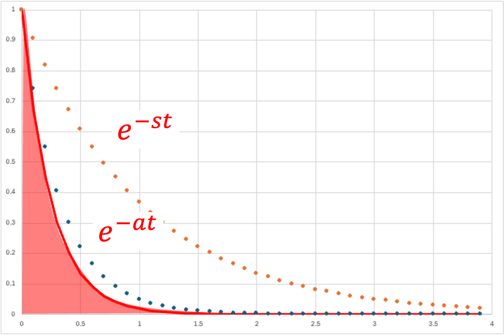
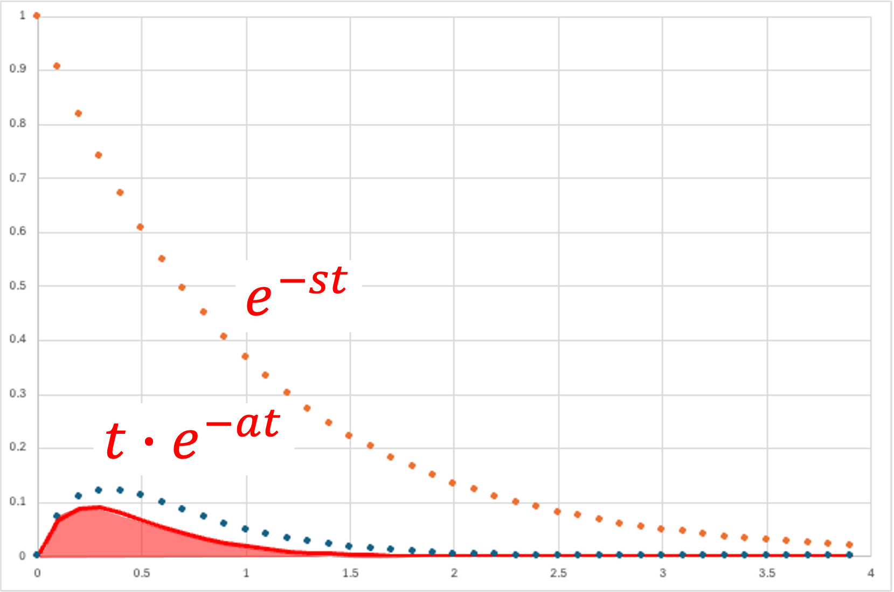

ラプラス変換_指数
・指数

\( \Large f(t) = e^{-at} \)
\( \Large\mathfrak{ L} \{ f(t) \} = \mathfrak{ L} \{ e^{-at} \}\)
\( \Large=\displaystyle \int_{0}^{ \infty } e^{-at} \ e^{-st} dt \)
\( \Large=\displaystyle \int_{0}^{ \infty } \ e^{-(s+a)t} dt \)
\( \Large= K \ \left[ - \displaystyle \frac{1}{s+a} e^{-(s+a)t} \right]_{0}^{\infty} \)
\( \Large= \displaystyle \frac{1}{s+a} \)
\( \Large \color{red}{\mathfrak{ L} \{ e^{-at} \} = \displaystyle \frac{1}{s+a}} \)
・指数×t

\( \Large f(t) = t \ e^{-at} \)
\( \Large\mathfrak{ L} \{ f(t) \} = \mathfrak{ L} \{ t \ e^{-at} \}\)
\( \Large=\displaystyle \int_{0}^{ \infty } t \ e^{-at} \ e^{-st} dt \)
\( \Large=\displaystyle \int_{0}^{ \infty } \ t \ e^{-(s+a)t} dt \)
部分積分から，
\( \Large (f \ g )' = f' \ g + f \ g' \)
\( \Large f' \ g = (f \ g )' - f \ g' \)
\( \Large \int f' \ g = \int (f \ g )' - \int f \ g' \)
\( \Large \int f' \ g = [f \ g ] - \int f \ g' \)
\( \Large f' = e^{-(s+a) t} \rightarrow f = - \frac{1}{s+a} e^{-(s+a) t} \)
\( \Large g = t \rightarrow g' = 1 \)
\( \Large \displaystyle \int_{0}^{ \infty } \ t \ e^{-(s+a)t} dt
= \left[ - \frac{1}{a+s} e^{-(s+a)t} \cdot t \right]_{0}^{\infty} - \int_{0}^{ \infty } \left( - \frac{1}{s+a} \ e^{-(s+a)t} \right) \ dt \)
\( \Large \displaystyle = 0 +\frac{1}{s+a} \int_{0}^{ \infty } e^{-(s+a)t} \ dt \)
\( \Large \displaystyle = \frac{1}{s+a} \left[ \frac{1}{s+a} e^{-(s+a)t} \right]_{0}^{\infty} \)
\( \Large \displaystyle = \frac{1}{(s+a)^2} \)
\( \Large \displaystyle \color{red}{\mathfrak{ L} \{ t \ e^{-at} \} = \frac{1}{(s+a)^2}} \)
次は三角関数です．